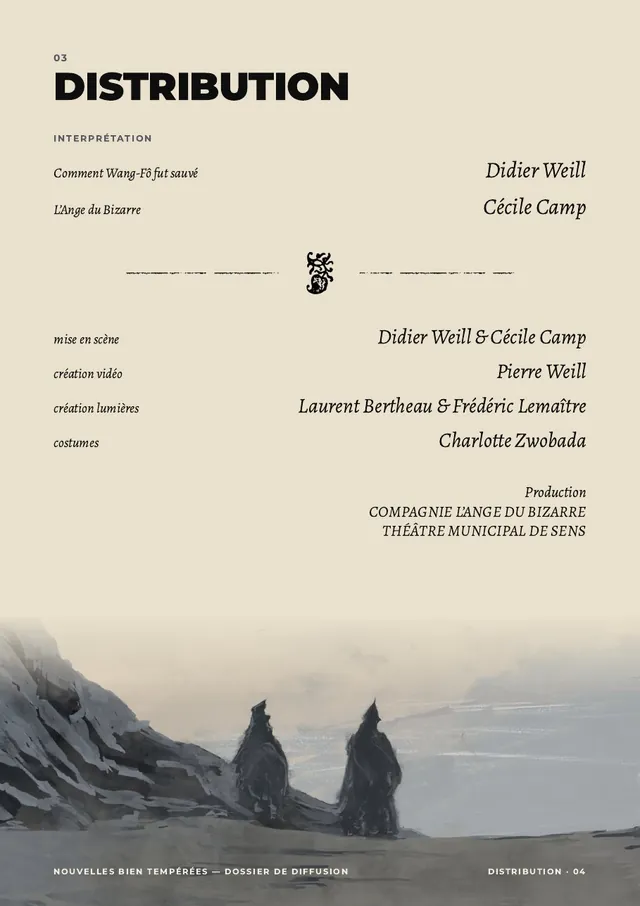
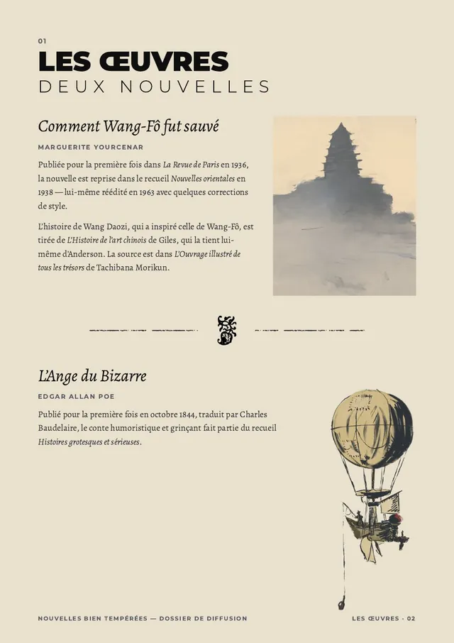

Nouvelles Bien Tempérées


N° 1 Compagnie L’Ange du Bizarre, coproduction Théâtre municipal de Sens, 2026
- Pour qui
- La compagnie L’Ange du Bizarre, pour un spectacle coproduit par le Théâtre municipal de Sens (saison 2026-2027).
- Ce que j’ai fait
- Les vidéos de décor projetées sur scène : un paysage d’estampe pour Comment Wang-Fô fut sauvé de Yourcenar, une colonnade et des ambiances pour L’Ange du Bizarre de Poe. Puis les illustrations et la mise en page du dossier de diffusion, et le teaser.
- Livré
- Les vidéos projetées du spectacle, le dossier de diffusion et le teaser. Crédit « création vidéo » au générique.
- Métiers
- Vidéo, éditorial, graphisme, illustration